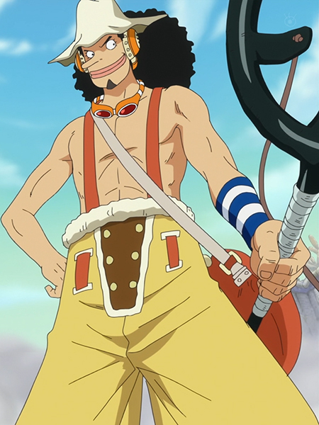

Usopp (ウソップ, Usoppu?), connu anciennement sous le nom Pipo dans la première version française du manga, également surnommé « Sniperking, le roi des snipers » (狙撃の王様そげキング, Sogeki no Ō-sama Sogekingu?), est un personnage de fiction appartenant à la franchise médiatique japonaise One Piece créée par Eiichirō Oda. Membre de l'équipage de Monkey D. Luffy, il occupe le poste de canonnier et de charpentier avant l'arrivée de Franky dans l'équipage ; il est également un inventeur talentueux et baratineur.
voix japonaise :Kappei Yamaguchi
voix francaise :Marc Bretonnière
fruit du demon :Tireur d'élite(Kabuto noir)
prime :200 milLions berry
